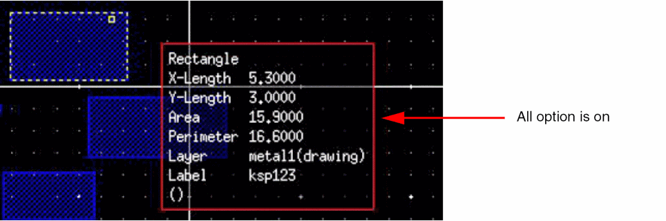

Customizing Object Information Display
Dynamic display controls can be enabled to display information about objects or to display the information dynamically when objects are being created, moved, or copied. The type of information displayed is object dependent and can be customized. You can use the Setup tab of the Dynamic Display form to specify the type of object information to be displayed.
To customize the type of object information displayed in information balloons:
-
In the layout window, select Options – Dynamic Display.
The Dynamic Display form appears. -
In the Setup tab, expand the Object Display Setting tree.
Expanding the tree displays the Shapes and Objects categories in which data types are organized. -
Expand the Shapes and Objects trees.
-
Select a category, shape, or object.
- Select a top-level category by clicking Layout, Shapes, or Objects to customize the display information for all types of data within the top-level category.
- Select individual shapes and objects such as Rectangle or Instance to customize the display information at a specific shape or object level.
When clicking a specific shape or object, the Contents section of the tab refreshes and displays the parameters that can be displayed. Only parameters that are relevant to the shape or object are selectable and other parameters are grayed out. -
Click the parameters that you want to display in the information balloon.
You can customize the display by selecting parameters at the top-level category and then selecting additional parameters to display or remove from the display at the individual object or shape level.
You can use the All or None buttons to select or deselect all available parameters for each shape and object rather than selecting parameters individually.
The following example shows the results of changing the display for Rectangle.
 - Click Apply or OK.
The number of decimal digits that display during the dynamic display of measurements of shapes is controlled by the displaySigDigits environment variable. However, the number of decimal places displayed for the Area field is fixed to 6 and is not controlled by this environment variable.
Related Topics
Return to top